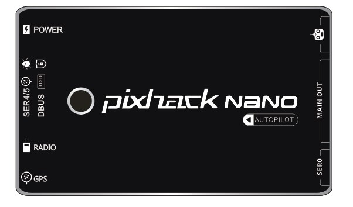
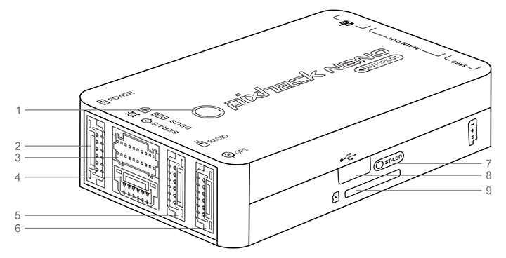

PixHack NANO Autopilot
Introduce
Pixhack NANO is a miniature autopilot designed and manufactured by CUAV. The board is based on the FMUv4 open hardware design. It is fully compatible with PX4 and ArduPilot firmware. Mainly used for micro-unmanned aerial vehicles (copter/plane/helicopters).
The shell adopts aerospace aluminum alloy CNC molding process, the size is only 34X57MM, and the high-performance IMU inner damping system is realized in a narrow space.
6 PWM outputs, 2 mavlink devices, 2 GPS positioning systems, I2C device expansion, CAN device expansion, IV voltage current sensor, debug interface
Built-in CM-20608 (six-axis sensor)\HMC5983L (three-axis electronic compass)\MS5611 (high-precision digital barometer) new high performance combination IMU.

Powerful processor
Based on STM32F427 (180MHZ) master
Optimized design
abundant precision sensors (including accelerometer, gyroscope, electronic compass, digital barometer)
The built-in sensor data fusion mechanism and failover mechanism in the software greatly reduce the chance of crashes caused by flight control.
Rich expansion
Scalable 1 set of electronic compass, 1 smart battery, 2 sets of NMEA or UBX standard GPS, CAN bus device (ESC), 2 I2C devices (smart battery, status light, optical flow smart camera, laser sensor, ultrasonic sensor, etc. )
Built-in shock absorber system
Separate design of sensor and main board, built-in high-performance shock absorption system, Able to adapt to a variety of severe environments
Technical specifications:
| Hardware parameters | |
|---|---|
| Main Processor Processor | STM32F427 |
| Sensor | |
| Accelerometer | ICM-20608 |
| Gyro | ICM-20608 |
| Compass | HMC5983 |
| Barometer | MS5611 |
| Interface | |
| Mavlink UART | 2（Hardware flow control） |
| GPS UART | 2 |
| DEBUG UART | 1 |
| Remote control signal input protocol | PPM/SBUS/DSM/DSM2 |
| RSSI | PWM or 3.3 analog voltage |
| I2C | 1 |
| CAN Standard bus | 1 |
| ADC input | 6.6V X1 |
| PWM ouput | standard 6 PWM IO |
| Support model | |
| Plane / copter / helicopter / VTOL / rover etc. | |
| Working environment and physical parameters | |
| PM working voltage | 4.5 ~ 5.5 V |
| USB voltage | 5.0 V +- 0.25v |
| Servo voltage | 4.8~5.4V |
| working temperature | -20 ~ 60°c |
| Size | |
| Long X Wide X High | 57*34*17mm |
| Weight | 40g |
About NANO

1: Status LED
2: POWER PM module
3: D-BUS data expansion interface
4: GPS2+DEBUG interface
5:radio data transmission interface
6: GPS+ compass interface
7: Start LED
8: micro USB
9: TF memory card
Interface definition：